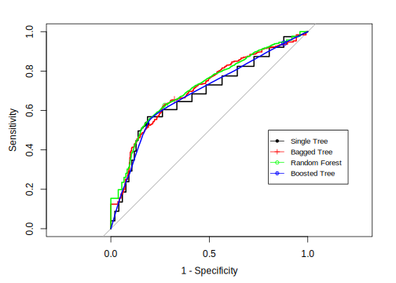

11.7 Gradient Boosted Machine
Boosting models were developed in the 1980s (V. L 1984; K. M and L 1989) and were originally for classification problems. Due to the excellent model performance, they were widely used for a variety of applications, such as gene expression (Dudoit S and T 2002; B. A. et. al 2000), chemical substructure classification (Varmuza K and K 2003), music classification (B. J. et. al 2006), etc. The first effective implementation of boosting is Adaptive Boosting (AdaBoost) algorithm came up by Yoav Freund and Robert Schapire in 1996 (YFR 1999). After that, some researchers (Friedman, Hastie, and Tibshirani 2000) started to connect the boosting algorithm with some statistical concepts, such as loss function, additive model, logistic regression. Friedman pointed out that boosting can be considered as a forward stagewise additive model that minimizes exponential loss. The new view of boosting in a statistical framework enabled the method to be extended to regression problems.
The idea is to combine a group of weak learners (a classifier that is marginally better than random guess) to produce a strong learner. Like bagging, boosting is a general approach that can be applied to different learners. Here we focus on the decision tree. Recall that both bagging and random forest create multiple copies of the original training data using the bootstrap, fitting a separate decision tree to each copy and combining all the results to create a single prediction. Boosting also creates different trees but the trees are grown sequentially and each tree is a weak learner. Any modeling technique with tuning parameters can produce a range of learners, from weak to strong. You can easily make a weak learner by restricting the depth of the tree. There are different types of boosting. Here we introduce two main types: adaptive boosting and stochastic gradient boosting.
11.7.1 Adaptive Boosting
Yoav Freund and Robert Schapire (Freund and Schapire 1997) came up the AdaBoost.M1 algorithm. Consider a binary classification problem where the response variable has two categories \(Y \in \{-1, 1\}\). Given predictor matrix, \(X\), construct a classifier \(G(X)\) that predicts \(1\) or \(-1\). The corresponding error rate in the training set is:
\[\bar{err}=\frac{1}{N}\Sigma_{i=1}^NI(y_i\neq G(x_i))\]
The algorithm produces a series of classifiers \(G_m(x),\ m=1,2,...,M\) from different iterations. In each iteration, it finds the best classifier based on the current weights. The misclassified samples in the \(m^{th}\) iteration will have higher weights in the \((m+1)^{th}\) iteration and the correctly classified samples will have lower weights. As it moves on, the algorithm will put more effort into the “difficult” samples until it can correctly classify them. So it requires the algorithm to change focus at each iteration. At each iteration, the algorithm will calculate a stage weight based on the error rate. The final prediction is a weighted average of all those weak classifiers using stage weights from all the iterations:
\[G(x)=sign ( \Sigma_{m=1}^M \alpha_{m}G_m(x))\] where \(\alpha_1,\alpha_2,...,\alpha_M\) are the weights from different iterations.
Since the classifier \(G_m(x)\) returns discrete value, the AdaBoost.M1 algorithm is known as “Discrete AdaBoost” (Friedman, Hastie, and Tibshirani 2000). You can revise the above algorithm if it returns continuousf value, for example, a probability (Friedman, Hastie, and Tibshirani 2000). As mentioned before, boosting is a general approach that can be applied to different learners. Since you can easily create weak learners by limiting the depth of the tree, the boosting tree is a common method. Since the classification tree is a low bias/high variance technique, ensemble decreases model variance and lead to low bias/low variance model. See Breinman (Leo Breiman 1998) for more explanation about why the boosting tree performs well in general. However, boosting can not significantly improve the low variance model. So applying boosting to Latent Dirichlet Allocation (LDA) or K-Nearest Neighbor (KNN) doesn’t lead to as good improvement as applying boosting to statistical learning methods like naive Bayes (Bauer and Kohavi 1999).
11.7.2 Stochastic Gradient Boosting
As mentioned before, Friedman (Friedman, Hastie, and Tibshirani 2000) provided a statistical framework for the AdaBoost algorithm and pointed out that boosting can be considered as a forward stagewise additive model that minimizes exponential loss. The framework led to some generalized algorithms such as Real AdaBoost, Gentle AdaBoost, and LogitBoost. Those algorithms later were unified under a framework called gradient boosting machine. The last section of the chapter illustrates how boosting can be considered as an additive model.
Consider a 2-class classification problem. You have the response \(y \in \{-1, 1\}\) and the sample proportion of class 1 from the training set is \(p\). \(f(x)\) is the model prediction in the range of \([-\infty, +\infty]\) and the predicted event probability is \(\hat{p}=\frac{1}{1+exp[-f(x)]}\). The gradient boosting for this problem is as follows:
When using the tree as the base learner, basic gradient boosting has two tuning parameters: tree depth and the number of iterations. You can further customize the algorithm by selecting a different loss function and gradient(Hastie T 2008). The final line of the loop includes a regularization strategy. Instead of adding \(f_i^{(j)}\) to the previous iteration’s \(f_i\), only a fraction of the value is added. This fraction is called learning rate which is \(\lambda\) in the algorithm. It can take values between 0 and 1 which is another tuning parameter of the model.
The way to calculate variable importance in boosting is similar to a bagging model. You get variable importance by combining measures of importance across the ensemble. For example, we can calculate the Gini index improvement for each variable across all trees and use the average as the measurement of the importance.
Boosting is a very popular method for classification. It is one of the methods that can be directly applied to the data without requiring a great deal of time-consuming data preprocessing. Applying boosting on tree models significantly improves predictive accuracy. Some advantages of trees that are sacrificed by boosting are speed and interpretability.
Let’s look at the R implementation.
gbmGrid <- expand.grid(interaction.depth = c(1, 3, 5, 7, 9),
n.trees = 1:5,
shrinkage = c(.01, .1),
n.minobsinnode = c(1:10))
set.seed(100)
gbmTune <- caret::train(x = trainx,
y = trainy,
method = "gbm",
tuneGrid = gbmGrid,
metric = "ROC",
verbose = FALSE,
trControl = trainControl(method = "cv",
classProbs = TRUE,
savePredictions = TRUE))# only show part of the output
gbmTuneStochastic Gradient Boosting
1000 samples
11 predictor
2 classes: 'Female', 'Male'
No pre-processing
Resampling: Cross-Validated (10 fold)
Summary of sample sizes: 899, 900, 900, 899, 899, 901, ...
Resampling results across tuning parameters:
shrinkage interaction.depth n.minobsinnode n.trees ROC Sens Spec
0.01 1 1 1 0.6821 1.00 0.00
0.01 1 1 2 0.6882 1.00 0.00
.
.
.
0.01 5 8 4 0.7096 1.00 0.00
0.01 5 8 5 0.7100 1.00 0.00
0.01 5 9 1 0.7006 1.00 0.00
0.01 5 9 2 0.7055 1.00 0.00
[ reached getOption("max.print") -- omitted 358 rows ]
ROC was used to select the optimal model using the largest value.
The final values used for the model were n.trees = 4,
interaction.depth = 3, shrinkage = 0.01 and n.minobsinnode = 6.The results show that the tuning parameter settings that lead to the best ROC are n.trees = 4 (number of trees), interaction.depth = 3 (depth of tree), shrinkage = 0.01 (learning rate) and n.minobsinnode = 6 (minimum number of observations in each node).
Now, let’s compare the results from the three tree models.
treebagRoc <- pROC::roc(response = bagTune$pred$obs,
predictor = bagTune$pred$Female,
levels = rev(levels(bagTune$pred$obs)))
rfRoc <- pROC::roc(response = rfTune$pred$obs,
predictor = rfTune$pred$Female,
levels = rev(levels(rfTune$pred$obs)))
gbmRoc <- pROC::roc(response = gbmTune$pred$obs,
predictor = gbmTune$pred$Female,
levels = rev(levels(gbmTune$pred$obs)))
plot.roc(rpartRoc,
type = "s",
print.thres = c(.5), print.thres.pch = 16,
print.thres.pattern = "", print.thres.cex = 1.2,
col = "black", legacy.axes = TRUE,
print.thres.col = "black")
plot.roc(treebagRoc,
type = "s",
add = TRUE,
print.thres = c(.5), print.thres.pch = 3,
legacy.axes = TRUE, print.thres.pattern = "",
print.thres.cex = 1.2,
col = "red", print.thres.col = "red")
plot.roc(rfRoc,
type = "s",
add = TRUE,
print.thres = c(.5), print.thres.pch = 1,
legacy.axes = TRUE, print.thres.pattern = "",
print.thres.cex = 1.2,
col = "green", print.thres.col = "green")
plot.roc(gbmRoc,
type = "s",
add = TRUE,
print.thres = c(.5), print.thres.pch = 10,
legacy.axes = TRUE, print.thres.pattern = "",
print.thres.cex = 1.2,
col = "blue", print.thres.col = "blue")
legend(0.2, 0.5, cex = 0.8,
c("Single Tree", "Bagged Tree",
"Random Forest", "Boosted Tree"),
lwd = c(1, 1, 1, 1),
col = c("black", "red", "green", "blue"),
pch = c(16, 3, 1, 10))
Since the data here doesn’t have many variables, we don’t see a significant difference among the models. But you can still see those ensemble methods are better than a single tree. In most of the real applications, ensemble methods perform much better. Random forest and boosting trees can be a baseline model. Before exploring different models, you can quickly run a random forest to see the performance and then try to improve that performance. If the performance you got from the random forest is not too much better than guessing, you should consider collecting more data or reviewing the problem to frame it a different way instead of trying other models. Because it usually means the current data is not enough to solve the problem.
11.7.3 Boosting as Additive Model
This section illustrates how boosting is a forward stagewise additive model that minimizes exponential loss (Friedman, Hastie, and Tibshirani 2000). Many seemingly different models can be represented as a basis expansion model. Recall the classifier obtained by the AdaBoost.M1 algorithm:
\[G(x)=sign ( \Sigma_{m=1}^M \alpha_{m}G_m(x))\]
The above expression fits in the framework of basis expansion which is as following:
\[\begin{equation} f(x)=\Sigma_{m=1}^M \beta_m b(x,\gamma_m) \tag{11.2} \end{equation}\]
where \(\beta_m,\ m=1,\dots,M\) is expansion coefficient and \(b(x,\gamma)\in \mathbb{R}\) is basis function. Many of the learning methods fit into this additive framework. Hastie et al discuss basis expansion in detail in Chapter 5 of Hastie T (2008) and cover the additive expansion for different learning techniques, such as single-hidden-layer neural networks (Chapter 11) and MARS (Section 9.4). These models are fit by minimizing a designated loss function averaged over the training data:
\[\begin{equation} \underset{\{\beta_m,\gamma_m\}_i^M}{min}\Sigma_{i=1}^N L\left(y_i,\Sigma_{m=1}^M\beta_{m}b(x_i;\gamma_m)\right) \tag{11.3} \end{equation}\]
Different models have different basis function \(b(x_i;\gamma_m)\). You can also customize loss function \(L(\cdot)\), such as squared-error loss, or likelihood-based loss. Optimizing the loss function across the whole training set is usually computation costly no matter the choice of basis and loss. The good news is that the problem can be simplified as fitting a single basis function.
\[\underset{\beta,\gamma}{min}=\Sigma_{i=1}^N L(y_i,\beta b(x_i;\gamma))\]
The forward stagewise algorithm approximates the optimal solution of equation (11.3). It adds new basis functions to the expansion without adjusting the previous ones. The forward stagewise additive algorithm is as following (Section 10.2 of Hastie T (2008)):
At iteration m, it will search for the optimal \(b(x;\gamma_m)\) and \(\beta_m\) based on the previous basis function \(f_{m-1}(x)\). And then add the new basis \(b(x;\gamma_m)\beta_m\) to the previous basis function to get a new basis function \(f_m(x)\) without changing any parameters from previous steps. Assume we use squared-error loss:
\[L(y,f(x))=(y-f(x))^2\]
Then we have:
\[L(y_i,f_{m-1}(x_i)+\beta b(x_i;\gamma))=(y_i-f_{m-1}(x_i)-\beta b(x_i;\gamma))^2\]
where \(y_i-f_{m-1}(x_i)\) is the residual for sample i based on the previous model. That is to say, it is fitting the new basis using the residual of the previous step.
However, the squared-error loss is generally not a good choice. For a regression problem, it is susceptible to outliers. It doesn’t fit the classification problem since the response is categorical. Hence we often consider other loss functions.
Now let is go back to the AdaBoost.M1 algorithm. It is actually a special case of the above forward stagewise model when the loss function is:
\[L(y,f(x))=exp(-yf(x))\]
In AdaBoost.M1, the basis function is the classifier from each iteration \(G_m(x)\in \{-1,1\}\). If we use the exponential loss, the optimization problem is
\[\begin{equation} \begin{array}{ccc} (\beta_m,G_m) & = & \underset{\beta,G}{argmin}\Sigma_{i=1}^N exp[-y_i(f_{m-1}(x_i)+\beta G(x_i))]\\ & = & \underset{\beta, G}{argmin}\Sigma_{i=1}^N exp[-y_i \beta G(x_i)]\cdot exp[-y_if_{m-1}(x_i)]\\ & = & \underset{\beta, G}{argmin}\Sigma_{i=1}^N w_i^m exp[-y_i\beta G(x_i)] \end{array} \tag{11.4} \end{equation}\]
where \(w_i^m= exp[-y_if_{m-1}(x_i)]\). It does not depend on \(\beta\) and \(G(x)\). So we can consider it as the weight for each sample. Since the weight is related to \(f_{m-1}(x_i)\), it changes each iteration. We can further decompose equation (11.4):
\[\begin{equation} \begin{array}{ccc} & & \underset{\beta,G}{argmin}\Sigma_{i=1}^{N}w_{i}^{m}exp[-y_{i}\beta G(x_{i})]\\ & = & \underset{\beta,G}{argmin}\Sigma_{i=1}^{N}\left\{ w_{i}^{m}e^{-\beta}I(y_{i}=G(x))+w_{i}^{m}e^{\beta}I(y_{i}\neq G(x))\right\} \\ & = & \underset{\beta,G}{argmin}\Sigma_{i=1}^{N}\left\{ w_{i}^{m}e^{-\beta}[1-I(y_{i}\neq G(x))]+w_{i}^{m}e^{\beta}I(y_{i}\neq G(x))\right\} \\ & = & \underset{\beta,G}{argmin}\left\{ (e^{\beta}-e^{-\beta})\cdot\Sigma_{i=1}^{N}w_{i}^{m}I(y_{i}\neq G(x_{i}))+e^{-\beta}\cdot\Sigma_{i=1}^{N}w_{i}^{m}\right\} \end{array} \tag{11.5} \end{equation}\]
when \(\beta >0\), the solution for equation (11.5) is:
\[G_{m} = \underset{G}{argmin}\Sigma_{i=1}^{N}w_{i}^{m}I(y_{i}\neq G(x))\]
It is the classifier that minimizes the weighted error. Plug the above \(G_m\) into equation (11.5). Take the derivative with respect to \(\beta\) and set it to be 0 to solve the optimal \(\beta_m\):
\[\beta_m =\frac{1}{2}ln\frac{1-err_m}{err_m}\]
where
\[err_m = \frac{\Sigma_{i=1}^N w_i^{m}I(y_i \neq G_m(x_i))}{\Sigma_{i=1}^N w_i^{m}}\]
According to the forward stagewise algorithm, the result is updated as:
\[f_m(x)=f_{m-1}(x)+\beta_m G_m(x)\]
We can go ahead and get the weight for the next iteration:
\[\begin{equation} \begin{array}{ccc} w_i^{m+1} & = & exp[-y_if_m (x_i)]\\ & = & exp[-y_if_{m-1}(x)-y_i \beta_m G_m(x)]\\ & = & w_{i}^{m}\cdot exp[-\beta_m y_i G_m(x_i)] \end{array} \tag{11.6} \end{equation}\]
Since \(-y_i G_m(x_i)=2\cdot I(y_i \neq G_m(x_i))-1\), equation (11.5) can be written as:
\[w_i^{m+1}=w_i^m \cdot exp[\alpha_mI(y_i\neq G_m(x_i))] \cdot exp[-\beta_m]\]
where \(\alpha_m=2\beta_m=log\frac{1-err_m}{err_m}\) is the same with the \(\alpha_m\) in AdaBoost.M1 algorithm we showed before. So AdaBoost.M1 is a special case of a forward stagewise additive model using exponential loss. For comparing and selecting different loss functions, you can refer to section 10.5 and 10.6 in (Hastie T 2008).